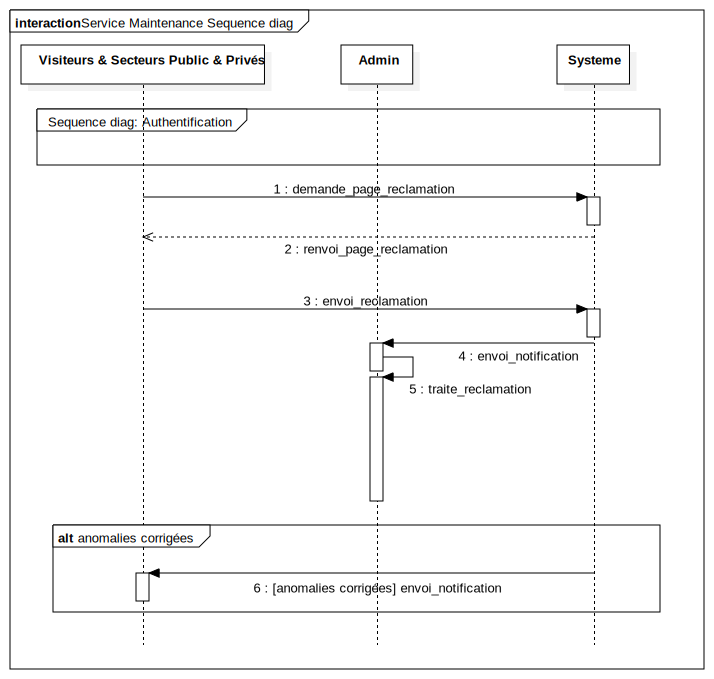

Interaction1
UMLInteraction
Smart Tourisme
::
Sequence diag: Service Maintenance
::
Interaction1
Description
none
Diagrams

Service Maintenance Sequence diag
Fragments
anomalies corrigées
Participants
Visiteurs & Secteurs Public & Privés
Admin
Systeme
Messages
demande_page_reclamation (Visiteurs & Secteurs Public & Privés→Systeme)
renvoi_page_reclamation (Systeme→Visiteurs & Secteurs Public & Privés)
envoi_reclamation (Visiteurs & Secteurs Public & Privés→Systeme)
envoi_notification (Systeme→Admin)
traite_reclamation (Admin→Admin)
[anomalies corrigées] envoi_notification (Systeme→Visiteurs & Secteurs Public & Privés)
Properties
Name
Value
name
Interaction1
stereotype
null
visibility
public
isReentrant
true
Owned Elements
Service Maintenance Sequence diag